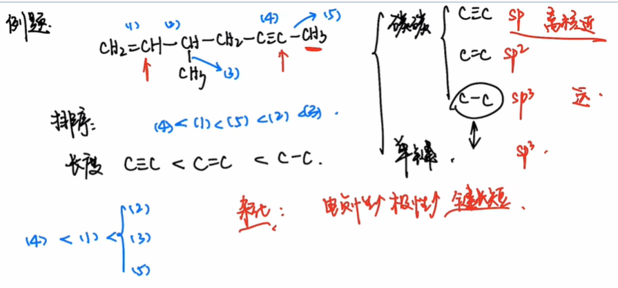

<meta data-alternate="https://freshmark.sunisalex.org/en/posts/chemistry/babychem/overview-of-stereochemistry/" data-article="true" data-canonical="https://freshmark.sunisalex.org/posts/chemistry/babychem/overview-of-stereochemistry/" data-description="本文介绍立体化学的基本研究对象，梳理分子的构成、构造、构型与构象之间的层级关系，并从键长、键角、中心原子杂化和孤对电子等方面整理分子共线与共面的基础判断方法。" data-freshmark-page data-title="基础有机化学：立体化学概述 — Freshmark"><main><header class="container article-header"><a href="/" class="back-link">← 返回全部文章</a><p class="eyebrow article-subject">化学</p><h1>基础有机化学：立体化学概述</h1><p class="article-dek">本文介绍立体化学的基本研究对象，梳理分子的构成、构造、构型与构象之间的层级关系，并从键长、键角、中心原子杂化和孤对电子等方面整理分子共线与共面的基础判断方法。</p><div class="article-meta"><time datetime="2026-07-10">2026年7月10日</time><span>1 分钟阅读</span><span>化学竞赛 · 有机化学</span><span class="view-count" data-article-view-count hidden>本文访问量 <strong data-article-views></strong></span><a href="index.md" download>下载 Markdown</a><button type="button" class="article-share" data-share-article data-share-text="本文介绍立体化学的基本研究对象，梳理分子的构成、构造、构型与构象之间的层级关系，并从键长、键角、中心原子杂化和孤对电子等方面整理分子共线与共面的基础判断方法。" data-share-title="基础有机化学：立体化学概述"><span data-share-label>分享文章</span></button><output aria-live="polite" class="visually-hidden" data-share-status role="status"></output></div></header><div class="article-wrap"><aside class="toc"><div class="toc-head"><p>本文目录</p><button type="button" class="toc-toggle" aria-expanded="false" aria-label="展开或收起目录" data-toc-toggle><span class="toc-toggle-label">目录</span><span class="toc-toggle-icon" aria-hidden="true"></span></button></div><nav aria-label="目录" class="toc-links" data-toc-links><a href="#引言" class="toc-level-1">引言</a><a href="#预备键参数" class="toc-level-1">预备:键参数</a><a href="#键长" class="toc-level-2">键长</a><a href="#键角" class="toc-level-2">键角</a><a href="#有关于分子中原子共线共面的问题" class="toc-level-3">有关于分子中原子共线共面的问题</a></nav></aside><article class="prose"><h1 id="引言">引言</h1><p>怎样&quot;确定&quot;一个分子?</p><p>通过分子式<span class="math-expression math-inline" data-math-source="\ce{C3H6OCl2}"></span>足矣吗?显然不,一个分子式可以对应若干种同分异构体.</p><p>相同分子式,可以通过不同键联方式得到不同异构体</p><p>相同键联方式,可以通过基团不同的排序得到不同异构体</p><p>相同排序,可以通过单键旋转得到不同异构体.</p><p>小结:</p><ul><li>不同原子<strong>构成</strong>分子,确定唯一的分子式</li><li>相同的分子式,有不同的<strong>构造</strong></li><li>相同的构造,有不同的<strong>构型</strong></li><li>相同的构型,有不同的<strong>构象</strong></li><li>尺度:构成&gt;构造&gt;构型&gt;构象 立体化学所研究的层级,是<strong>构型</strong>与<strong>构象</strong></li></ul><h1 id="预备键参数">预备:键参数</h1><p>立体化学所研究的键参数:</p><ul><li>键长</li><li>键角</li></ul><h2 id="键长">键长</h2><figure class="prose-figure"><picture class="responsive-picture"><source srcset="image.freshmark-3a11d313ab94-480w.avif 480w, image.freshmark-3a11d313ab94-895w.avif 895w" type="image/avif"><source srcset="image.freshmark-3a11d313ab94-480w.webp 480w, image.freshmark-3a11d313ab94-895w.webp 895w" type="image/webp"></picture><figcaption>关于电负性/杂化的综合判断</figcaption></figure><p>结论</p><ol><li>电负性越大,键的极性越大,键长越短</li><li>不同杂化对应键长:<span class="math-expression math-inline" data-math-source="sp\lt sp^2\lt sp^3"></span></li><li>原子半径与键长正相关</li></ol><h2 id="键角">键角</h2><p><picture class="responsive-picture"><source srcset="image-1.freshmark-9a379d9ea23b-480w.avif 480w, image-1.freshmark-9a379d9ea23b-960w.avif 960w, image-1.freshmark-9a379d9ea23b-1440w.avif 1440w" type="image/avif"><source srcset="image-1.freshmark-9a379d9ea23b-480w.webp 480w, image-1.freshmark-9a379d9ea23b-960w.webp 960w, image-1.freshmark-9a379d9ea23b-1440w.webp 1440w" type="image/webp"></picture></p><p>比较优先级:</p><ol><li>中心原子杂化</li><li>孤对电子</li><li>中心原子电负性</li></ol><h3 id="有关于分子中原子共线共面的问题">有关于分子中原子共线共面的问题</h3><p><picture class="responsive-picture"><source srcset="image-2.freshmark-b5713410c7af-480w.avif 480w, image-2.freshmark-b5713410c7af-926w.avif 926w" type="image/avif"><source srcset="image-2.freshmark-b5713410c7af-480w.webp 480w, image-2.freshmark-b5713410c7af-926w.webp 926w" type="image/webp"></picture></p></article></div><section class="container comments" data-comments data-comments-path="/posts/chemistry/babychem/overview-of-stereochemistry/"><div class="comments-head"><div><p class="eyebrow">评论</p><h2 data-comments-title>评论</h2></div><p>登录后参与讨论。注册时只需验证一次邮箱。</p></div><div class="comment-list" aria-live="polite" data-comment-list><p class="comment-state" data-comment-state>正在加载评论…</p></div><button type="button" class="comment-more" data-comments-more hidden>加载更早的评论</button><div class="comment-auth" data-comment-auth><p class="comment-auth-status" data-auth-loading>正在检查登录状态…</p><div hidden data-auth-guest><form class="comment-auth-form" data-auth-login><h3>登录后评论</h3><label>邮箱<input autocomplete="email" name="email" maxlength="254" required type="email"></label><label>密码<input autocomplete="current-password" name="password" maxlength="128" required type="password"></label><div class="comment-form-foot"><p class="comment-form-status" role="status" data-auth-login-status></p><button type="submit">登录</button></div></form><details class="comment-register"><summary>还没有账号？注册</summary><form class="comment-auth-form" data-auth-register><label>昵称<input autocomplete="name" name="name" maxlength="40" required></label><label>邮箱<input autocomplete="email" name="email" maxlength="254" required type="email"></label><label>密码<input autocomplete="new-password" name="password" maxlength="128" required type="password" minlength="8"></label><p class="comment-auth-hint">至少 8 个字符。</p><div class="comment-form-foot"><p class="comment-form-status" role="status" data-auth-register-status></p><button type="submit">注册</button></div></form></details></div><form class="comment-auth-form" hidden data-auth-verify><p>验证码已发送到邮箱，请在 10 分钟内完成注册。</p><label>六位验证码<input autocomplete="one-time-code" name="code" maxlength="6" required minlength="6" inputmode="numeric" pattern="[0-9]{6}"></label><div class="comment-form-foot"><p class="comment-form-status" role="status" data-auth-verify-status></p><button type="submit">完成注册</button></div></form><div class="comment-auth-user" data-auth-user hidden><p>当前登录： <strong data-auth-user-name></strong> <span data-auth-user-email></span></p><button type="button" data-auth-logout>退出登录</button></div></div><form class="comment-form" hidden data-comment-form><label>评论内容<textarea maxlength="2000" minlength="2" name="body" placeholder="写下你的想法…" required rows="5"></textarea></label><p class="comment-markdown-hint">支持 Markdown：加粗、链接、引用、列表和代码。</p><label aria-hidden="true" class="comment-honeypot">Website<input autocomplete="off" name="website" tabindex="-1"></label><div class="comment-form-foot"><p class="comment-form-status" role="status" data-comment-form-status></p><button type="submit" data-comment-submit>发表评论</button></div></form></section></main>